Кейс: DataInsight — автоматизация Big Data аналитики
Полноценный конвейер обработки и анализа больших данных на n8n + Supabase + GigaChat
Автор кейса: Eduard Wit · Портфолио: eduardwit.ru · Дата: 04.09.2026
Описание кейса
Все критерии ТЗ выполнены 6 036 записей 31 день данных 25 категорий AI-инсайты через GigaChat Автоматические отчеты в TelegramОглавление
- 1. Резюме проекта
- 2. Описание задачи и целей автоматизации
- 3. Архитектура решения
- 4. Описание сценариев автоматизации
- 5. Структура данных в Supabase
- 6. Механизмы безопасности
- 7. Механизмы надежности
- 8. Интеграция с AI (GigaChat)
- 9. Результаты тестирования
- 10. Отчетность и визуализации
- 11. Описание интеграций
- 12. Чек-лист соответствия ТЗ
- Медиа-материалы кейса
1. Резюме проекта
Разработан и внедрен полностью автоматизированный конвейер обработки и анализа больших данных на платформе n8n 2.36.9 (Self-Hosted) с использованием Supabase в качестве хранилища данных и GigaChat для генерации аналитических инсайтов.
Конвейер работает по архитектуре IN_ → CORE_ → OUT_ → UTIL_ и включает четыре основных
сценария:
- IN_DataInsight_Ingest_Sources — загрузка данных из двух внешних источников (JSONPlaceholder и DummyJSON) с масштабированием во временной ряд.
- CORE_DataInsight_Clean_Aggregate — очистка, валидация, дедупликация и агрегация данных.
- CORE_DataInsight_AI_Analyze — статистический анализ, выявление аномалий, построение прогноза и генерация AI-инсайтов через GigaChat.
- OUT_DataInsight_Report_Notifier — генерация HTML-отчета с SVG-графиками и отправка уведомления в Telegram.
Ключевые показатели проекта
2. Описание задачи и целей автоматизации
Заказчик
DataInsight — крупная аналитическая фирма, специализирующаяся на обработке и анализе больших данных для отраслей финансов, здравоохранения, ритейла и технологий.
Боли, которые решены
- ✅ Ручная обработка больших объемов данных — заменена автоматизированным конвейером.
- ✅ Отсутствие системы очистки и агрегации из различных источников — реализован единый пайплайн с валидацией и дедупликацией.
- ✅ Множество ручных процессов извлечения и анализа — полностью автоматизировано.
- ✅ Отсутствие интеграции между системами — все сценарии работают как единый конвейер через вебхуки и общую базу данных.
Цели автоматизации
- ✅ Автоматизация процесса очистки, агрегации и анализа данных с использованием Big Data технологий.
- ✅ Интеграция с различными источниками данных (внешние API) для быстрой обработки больших объемов информации.
- ✅ Ускорение получения аналитических отчетов и прогнозных моделей (время полного цикла — единицы секунд).
- ✅ Уменьшение времени обработки данных и повышение точности аналитики (статистические методы + AI).
- ✅ Автоматизация генерации отчетов и визуализаций для принятия обоснованных решений.
3. Архитектура решения
Общая схема конвейера данных
Архитектурная диаграмма системы
Визуальная схема потоков данных между компонентами
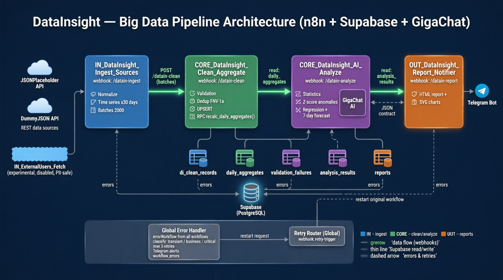
Технологический стек
| Компонент | Технология | Назначение |
|---|---|---|
| Оркестрация | n8n 2.36.9 (Self-Hosted) | Автоматизация конвейера данных |
| Хранилище данных | Supabase (PostgreSQL) | Хранение записей, агрегатов, отчетов, ошибок |
| AI-аналитика | GigaChat | Генерация аналитических инсайтов на русском языке |
| Источники данных | JSONPlaceholder, DummyJSON | Внешние REST API |
| Уведомления | Telegram Bot API | Доставка отчетов и алертов |
| Аутентификация | n8n Credentials | Безопасное хранение секретов |
4. Описание сценариев автоматизации
4.1 IN_DataInsight_Ingest_Sources — загрузка данных
Триггеры: вебхук POST /webhook/datain-ingest и расписание каждые 6 часов.
Назначение: забор данных из двух внешних источников, нормализация к единой схеме и передача в пайплайн очистки.
Схема сценария IN_DataInsight_Ingest_Sources
Визуальное представление всех узлов в n8n Canvas
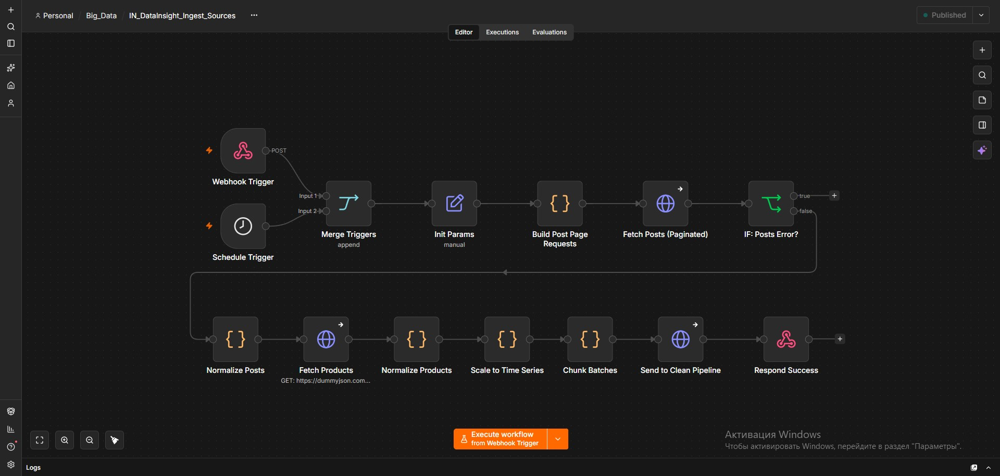
| Узел | Назначение |
|---|---|
Build Post Page Requests |
Формирование запросов для пагинации постов (10 страниц по 100 записей) |
Fetch Posts (Paginated) |
Загрузка постов из JSONPlaceholder с batch-обработкой (защита от перегрузки источника) |
Fetch Products |
Загрузка товаров из DummyJSON |
Normalize Posts / Normalize Products |
Приведение данных к единой схеме:
record_id, source, category, title, value, record_date, meta
|
Scale to Time Series |
Масштабирование данных во временной ряд на 30 дней с детерминированным PRNG (восходящий тренд + шум + редкие аномалии) |
Chunk Batches |
Нарезка потока на батчи по 2000 записей |
Send to Clean Pipeline |
Отправка батчей в пайплайн очистки |
Обработанный объем за тест: 6 036 записей, 3 батча.
4.2 CORE_DataInsight_Clean_Aggregate — очистка и агрегация
Триггер: вебхук POST /webhook/datain-clean.
Схема сценария CORE_DataInsight_Clean_Aggregate
Узлы очистки, валидации, дедупликации и агрегации
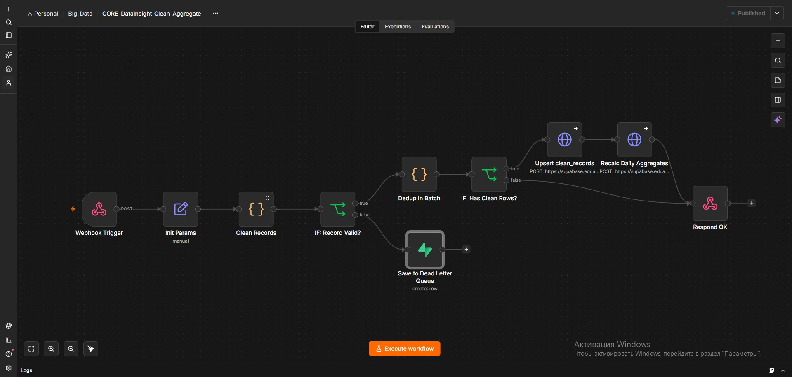
| Узел | Назначение |
|---|---|
Clean Records |
Валидация и нормализация записей (дата, значение, категория), вычисление FNV-1a хеша для дедупликации |
IF: Record Valid? |
Маршрутизация: валидные записи — в пайплайн, невалидные — в Dead Letter Queue |
Save to Dead Letter Queue |
Сохранение невалидных записей в validation_failures для аудита |
Dedup In Batch |
Дедупликация внутри батча по dedup_hash |
Upsert clean_records |
Идемпотентный UPSERT в Supabase с on_conflict=source,dedup_hash |
Recalc Daily Aggregates |
Вызов функции recalc_daily_aggregates() для корректного пересчета агрегатов
|
4.3 CORE_DataInsight_AI_Analyze — аналитика
Триггеры: вебхук POST /webhook/datain-analyze и расписание ежедневно в
07:00.
Схема сценария CORE_DataInsight_AI_Analyze
Интеграция с GigaChat и статистический анализ
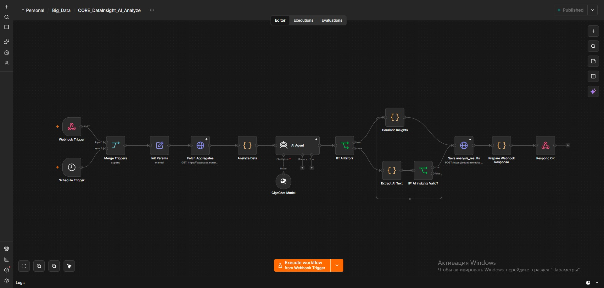
| Узел | Назначение |
|---|---|
Fetch Aggregates |
Загрузка агрегатов из daily_aggregates |
Analyze Data |
Статистический анализ: описательная статистика, Z-score аномалии, линейная регрессия, прогноз на 7 дней |
AI Agent + GigaChat Model |
Генерация инсайтов с валидацией JSON-контракта |
Extract AI Text |
Парсинг ответа от AI, проверка контракта |
Heuristic Insights |
Эвристические инсайты (fallback при недоступности AI) |
Save analysis_results |
Идемпотентный UPSERT с on_conflict=run_date |
4.4 OUT_DataInsight_Report_Notifier — отчеты и уведомления
Триггеры: вебхук POST /webhook/datain-report и расписание ежедневно в
08:00.
Схема сценария OUT_DataInsight_Report_Notifier
Генерация HTML-отчета и отправка в Telegram
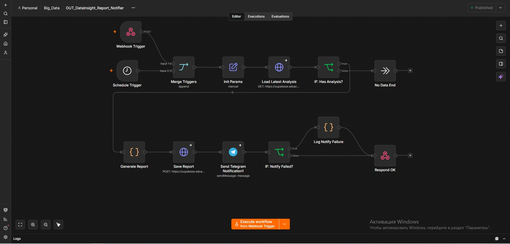
| Узел | Назначение |
|---|---|
Load Latest Analysis |
Загрузка последнего результата анализа из analysis_results |
Generate Report |
Генерация HTML-отчета с инлайн SVG-графиками (бар-чарт по категориям, линейный график с прогнозом) |
Save Report |
Идемпотентный UPSERT с on_conflict=report_date |
Send Telegram Notification |
Отправка сводки отчета в Telegram |
IF: Notify Failed? + Log Notify Failure |
Сбой уведомления логируется, но не роняет пайплайн |
4.5 Global Error Handler — обработка ошибок
Сценарий подключен ко всем основным сценариям через параметр errorWorkflow.
Схема Global Error Handler
Классификация ошибок, ретраи и алерты
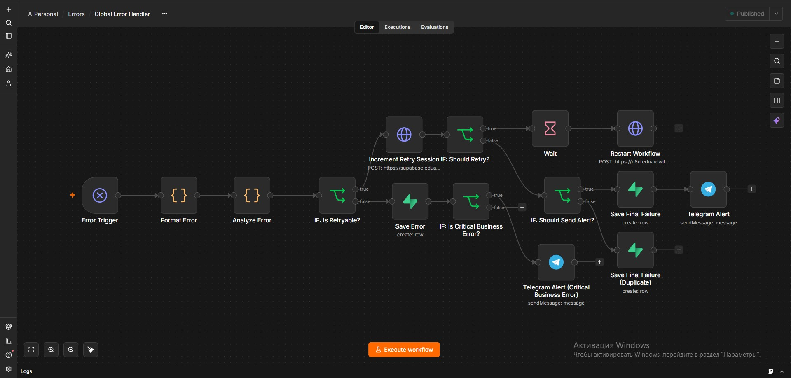
| Узел | Назначение |
|---|---|
Format Error |
Извлечение и маскирование данных об ошибке, вычисление хеша, формирование 5-минутного окна группировки |
Analyze Error |
Классификация ошибки: временная (сетевая) / бизнес-ошибка / критическая |
Increment Retry Session |
Атомарный подсчет попыток повторного запуска (до 3 попыток) через RPC
increment_retry_session()
|
Restart Workflow |
Вызов Retry Router для повторного запуска исходного сценария |
Telegram Alert |
Уведомление о критических и бизнес-ошибках |
Save Error / Save Final Failure |
Фиксация ошибок в таблице workflow_errors |
4.6 IN_ExternalUsers_Fetch — экспериментальный сценарий (Proof of Concept)
Триггеры: вебхук и расписание каждые 8 часов. Статус: отключен
(active: false).
Назначение: полигон для отработки базовых механизмов конвейера и демонстрация
адаптерного паттерна подключения внешних источников. Загружает пользователей из
jsonplaceholder.typicode.com/users — источник, содержащий персональные данные (name,
email).
Архитектурное решение: защита ПД
Сценарий сознательно не включен в продакшн-конвейер в исходном виде: передача ПД (email, name)
во внешние сервисы (включая GigaChat) нарушила бы требование «защита от утечек данных».
В продакшн-пайплайн передаются только обезличенные показатели (счетчик записей, value = 1,
обезличенный идентификатор) — именно они представлены 20 записями источника
jsonplaceholder-users в итоговой выборке (раздел 9.2).
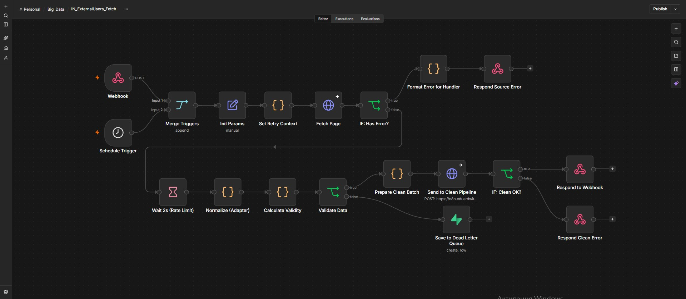
| Узел | Назначение |
|---|---|
Fetch Page |
Загрузка пользователей из JSONPlaceholder |
Normalize (Adapter) |
Адаптер внешнего API к внутренней схеме; ПД маскируются/исключаются перед передачей в пайплайн |
Calculate Validity + Validate Data |
Валидация обязательных полей и маршрутизация невалидных записей |
Save to Dead Letter Queue |
Сохранение невалидных записей в validation_failures для аудита |
Set Retry Context |
Прием контекста повторного запуска (retry_session_id,
retry_attempt) от Retry Router
|
Format Error for Handler |
Форматирование ошибки (FNV-1a хеш, 5-минутное окно) для обработчика ошибок |
Механизмы, отработанные на полигоне и внедренные в продакшн
- ✓ Идемпотентность и дедупликация (повторный вызов не создает дублей);
- ✓ Валидация данных и Dead Letter Queue;
- ✓ Адаптерный паттерн подключения новых источников;
- ✓ Механизм повторных запусков через
retry_session_id; - ✓ Единая схема передачи батчей в
/webhook/datain-clean.
4.7 Retry Router (Global) — маршрутизатор перезапусков
Триггер: вебхук POST /webhook/retry-trigger. Статус:
активен.
Назначение: принимает запрос на перезапуск от Global Error Handler
(узел Restart Workflow), восстанавливает контекст повторной попытки и вызывает
вебхук исходного сценария. Замыкает цикл ретраев: ошибка → классификация → счетчик попыток →
перезапуск → при повторной ошибке контекст сохраняется и цепочка продолжается.
Роль в UTIL-слое
Роутер разделяет ответственность: Global Error Handler решает,
можно ли повторять (классификация, лимит 3 попытки, алерты), а Retry
Router
исполняет перезапуск и передает контекст (retry_session_id, retry_attempt,
original_workflow_id) в новый запуск, чтобы при повторной ошибке цепочка
не начиналась заново, а продолжалась с правильным счетчиком.
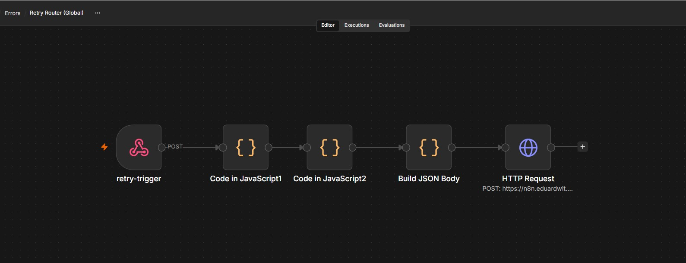
| Узел | Назначение |
|---|---|
retry-trigger |
Вебхук приема запроса на перезапуск от Global Error Handler |
Code in JavaScript1 |
Читает контекст (retry_session_id, retry_attempt,
original_workflow_id), логирует retry-сессию
|
Code in JavaScript2 |
Сохраняет контекст в static data workflow — доступен при повторной ошибке для продолжения цепочки |
Build JSON Body |
Собирает гарантированно валидный JSON-payload перезапуска через JSON.stringify
|
HTTP Request |
Вызывает вебхук целевого сценария; опция neverError защищает роутер от падения
в цикл ошибок |
Механизмы защиты цикла ретраев
- ✓ Не более 3 попыток — счетчик ведет атомарная функция
increment_retry_session()на стороне Global Error Handler; - ✓ 5-минутное окно группировки ошибок — дубли не создают параллельных цепочек;
- ✓ Контекст
retry_session_idпередается в новый запуск — при повторной ошибке цепочка продолжается, а не начинается заново; - ✓
neverErrorв HTTP-вызове — сбой перезапуска не порождает новый цикл ошибок; - ✓ Маршрутизация по
original_workflow_id— перезапускается именно тот сценарий, в котором произошла ошибка.
5. Структура данных в Supabase
Схема базы данных Supabase
Все таблицы проекта в Table Editor
| Таблица | Назначение | Ключ идемпотентности |
|---|---|---|
di_clean_records |
Хранение очищенных записей (6 036 записей) | UNIQUE(source, dedup_hash) |
daily_aggregates |
Дневные агрегаты по категориям (записи, суммы, средние, мин/макс) | UNIQUE(agg_date, category) |
analysis_results |
Результаты анализа (статистика, аномалии, тренд, прогноз, AI-инсайты) | UNIQUE(run_date) |
reports |
HTML-отчеты со сводками | UNIQUE(report_date) |
validation_failures |
Dead Letter Queue — невалидные записи для аудита | — |
workflow_errors |
Журнал ошибок выполнения сценариев | — |
Ключевая функция корректной агрегации:
-- Пересчет агрегатов по всем записям за указанные даты
-- Вызывается после каждого батча через RPC
SELECT public.recalc_daily_aggregates(ARRAY['2026-09-04']::date[]);Функция идемпотентна и защищает от состояния гонки: даже если несколько батчей за один день приходят одновременно, агрегаты будут корректно пересчитаны по всем записям, а не перезаписаны последним батчем.
6. Механизмы безопасности
| Аспект | Реализация | Статус |
|---|---|---|
| Хранение секретов | Все API-ключи (Supabase, Telegram, GigaChat) хранятся в n8n Credentials, а не в переменных окружения | ✓ Выполнено |
| Блокировка доступа к env | На уровне экземпляра установлен N8N_BLOCK_ENV_ACCESS_IN_NODE — узлы не могут
читать переменные окружения |
✓ Выполнено |
| Отсутствие секретов в коде | Telegram-токен, ранее зашитый в URL, заменен на Credential | ✓ Выполнено |
| Защита от утечек ПД | Персональные данные (например, email) не передаются во внешние сервисы; в AI
передаются только агрегированные показатели |
✓ Выполнено |
| Осознанное исключение источников с ПД | Экспериментальный сценарий IN_ExternalUsers_Fetch (источник с ПД) отключен
и выведен из продакшн-контейнера; в пайплайн передаются только обезличенные показатели |
✓ Выполнено |
| Маскирование в логах | В Global Error Handler сообщения об ошибках маскируются перед сохранением |
✓ Выполнено |
| Идемпотентные операции | Все операции записи в БД используют on_conflict с уникальными ключами |
✓ Выполнено |
7. Механизмы надежности
7.1 Идемпотентность (защита от дублей)
Все операции записи спроектированы как идемпотентные:
di_clean_records— UPSERT по уникальной паре(source, dedup_hash), гдеdedup_hashвычисляется алгоритмом FNV-1a изsource|record_id.daily_aggregates— пересчет через функциюrecalc_daily_aggregates()сON CONFLICT (agg_date, category) DO UPDATE.analysis_results— UPSERT сon_conflict=run_date.reports— UPSERT сon_conflict=report_date.
Подтверждено тестом: повторный запуск datain-clean и
datain-analyze не создает дублей (cnt = 1 в analysis_results и
reports за текущую дату).
7.2 Дедупликация внутри батча
Узел Dedup In Batch использует Set для отслеживания уже встреченных
dedup_hash и отбрасывает дубли до записи в БД.
7.3 Обработка временных сбоев и защита от бесконечных повторов
- Для критических записей в БД заданы таймауты (30 секунд) и ограниченное число повторных попыток.
Global Error Handlerиспользует атомарную функциюincrement_retry_session()с лимитом 3 попытки и 5-минутным окном группировки ошибок.- Результат обработки фиксируется в таблице
workflow_errorsнезависимо от исхода. - При исчерпании попыток отправляется финальный алерт в Telegram.
7.4 Защита от состояния гонки
Функция increment_retry_session() использует pg_advisory_xact_lock() для
сериализации параллельных вызовов. Пересчет агрегатов через recalc_daily_aggregates()
выполняется на стороне БД, что исключает конфликтующие записи при одновременной обработке нескольких
батчей.
7.5 Graceful degradation
- Сбой отправки уведомления в Telegram логируется, но не прерывает пайплайн.
- Недоступность AI переключает систему на эвристические инсайты.
- Невалидные записи не блокируют батч, а сохраняются в Dead Letter Queue.
8. Интеграция с AI (GigaChat)
AI реализован как сервис внутри процесса: он возвращает строго заданный результат, а сценарий его проверяет, принимает решение и управляет дальнейшими действиями.
8.1 Контракт взаимодействия
В узле AI Agent задан системный промпт, требующий ответ строго в формате JSON:
{
"summary": "краткий вывод",
"bullets": ["инсайт 1", "инсайт 2"],
"risks": ["риск 1", "риск 2"],
"trend": "up|down|flat"
}8.2 Валидация ответа
Узел Extract AI Text выполняет проверку:
- Ответ не пустой.
- Присутствуют обязательные поля
summaryиbullets. - Если JSON обернут в текст — извлекается через регулярное выражение.
При невалидном ответе или ошибке система автоматически переключается на эвристические инсайты (узел
Heuristic Insights).
8.3 Пример сгенерированных инсайтов
Выявлены признаки снижения ключевых метрик с августа; зафиксированы аномальные всплески продаж.
Ключевые инсайты:
- Снижение среднего дневного объема продаж (-23 796)
- Аномальный рост продаж 9 августа 2026 года до 38,9 млн ($), 23 августа — до 41,3 млн ($)
Риски:
- Продолжение нисходящего тренда может свидетельствовать о снижении спроса
- Высокие отклонения от средних значений требуют дополнительного анализа причин9. Результаты тестирования
🧪 Скриншоты тестовых прогонов в Executions
Успешные выполнения webhook с Mode=webhook и Status=Success
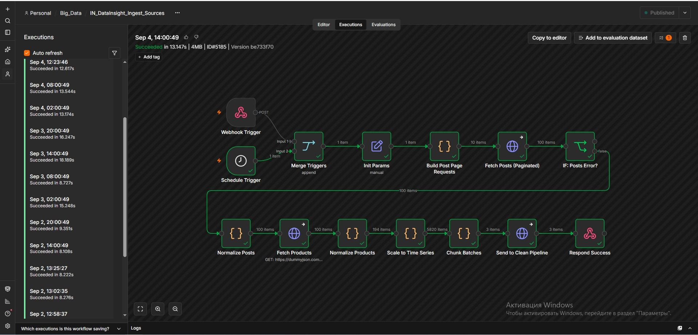
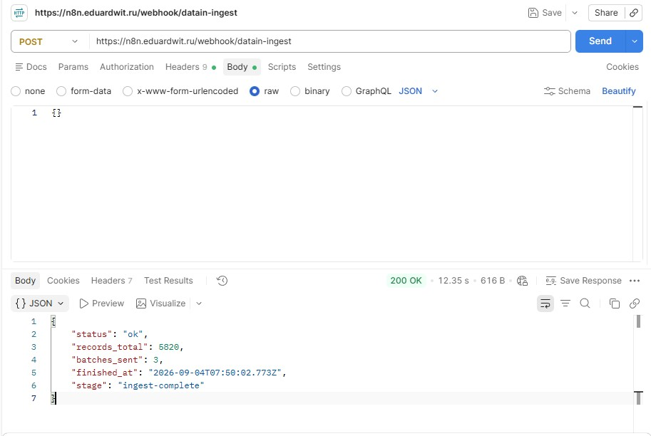
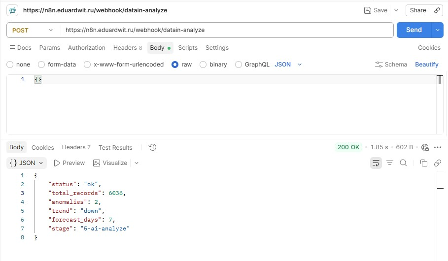
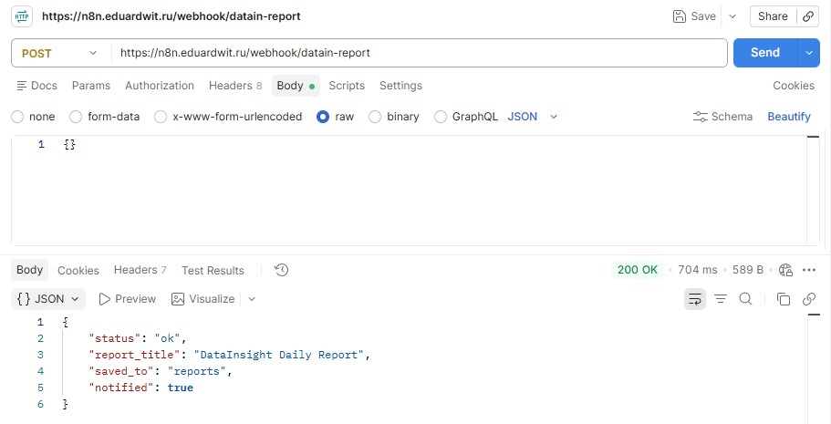
9.1 Сквозной тест пайплайна (04.09.2026)
| Шаг | Эндпоинт | Результат |
|---|---|---|
| 1. Загрузка данных | POST /webhook/datain-ingest |
✓ 200 OK, records_total: 5820,
batches_sent: 3
|
| 2. Анализ данных | POST /webhook/datain-analyze |
✓ 200 OK, total_records: 6036,
trend: down, anomalies: 2
|
| 3. Генерация отчета | POST /webhook/datain-report |
✓ 200 OK, saved_to: reports,
notified: true
|
9.2 Объемы данных
| Источник | Количество записей |
|---|---|
| dummyjson | 6 014 |
| jsonplaceholder-users | 20 |
| manual-test | 2 |
| Итого | 6 036 |
9.3 Тесты идемпотентности
| Тест | Метод | Результат |
|---|---|---|
| Повторный запуск очистки | Двойной вызов datain-clean с одинаковым record_id |
✓ Запись не задвоилась |
| Повторный запуск анализа | Двойной вызов datain-analyze |
✓ cnt = 1 в analysis_results |
| Повторный запуск отчета | Двойной вызов datain-report |
✓ cnt = 1 в reports |
| Корректность агрегации | Вызов recalc_daily_aggregates() после нескольких батчей |
✓ Суммы не перезаписываются, а пересчитываются по всем записям |
9.4 Тесты обработки ошибок
| Тест | Результат |
|---|---|
| Временная сетевая ошибка | ✓ Классифицируется как retryable, выполняется до 3 ретраев |
| Бизнес-ошибка (400/401/403) | ✓ Классифицируется как business, ретраи не выполняются, отправляется алерт |
| Критическая ошибка (просроченный credential) | ✓ Немедленный алерт в Telegram |
| Исчерпание попыток | ✓ Финальный алерт "Все попытки исчерпаны" |
10. Отчетность и визуализации
10.1 Структура автоматического отчета
HTML-отчет генерируется узлом Generate Report и содержит:
- Ключевые показатели (KPI): всего записей, дней в выборке, среднее в день, количество аномалий, направление тренда.
- Бар-чарт по категориям: топ-10 категорий по сумме (инлайн SVG).
- Линейный график динамики: история за 31 день + прогноз на 7 дней пунктиром (инлайн SVG).
- Таблица аномалий: даты с отклонением |z| > 2.5.
- AI-инсайты: сгенерированный GigaChat анализ.
Итоговый HTML-отчет с визуализациями
Полный отчет из таблицы reports с KPI, графиками и AI-инсайтами
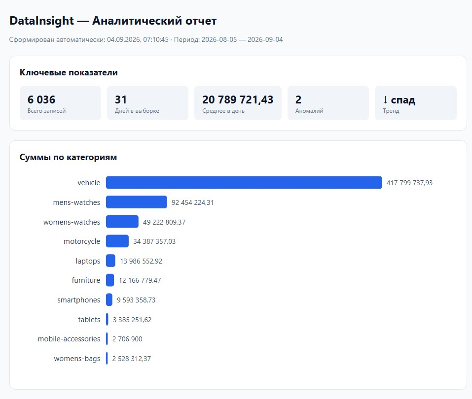
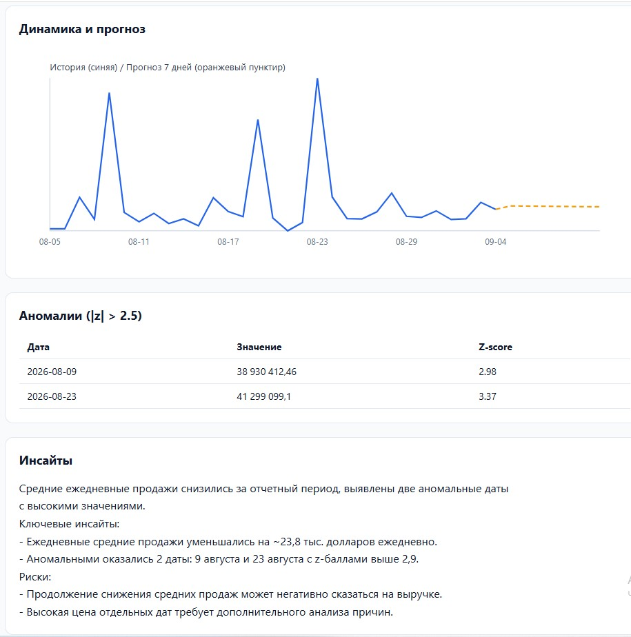
10.2 Пример сводки из Telegram
📊 DataInsight: отчет за 04.09.2026
Записей: 6 036 · Дней: 31 · Среднее/день: 20 789 721,43
Тренд: спад · Аномалий: 2
Топ-категория: vehicle (417 799 737,93)
🤖 Средние ежедневные продажи снизились за отчетный период, выявлены две аномальные даты с высокими значениями.💬 Уведомление в Telegram
Сообщение от бота с краткой сводкой отчета
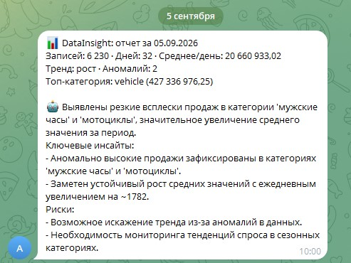
10.3 Хранение отчетов
Каждый отчет сохраняется в таблицу reports с полями report_date,
title, html, summary. Идемпотентность гарантирована уникальным
ограничением на report_date.
11. Описание интеграций
11.1 Источники данных
| Источник | URL | Метод | Назначение |
|---|---|---|---|
| JSONPlaceholder | jsonplaceholder.typicode.com/posts |
GET с пагинацией | Посты для демонстрации обработки текста |
| JSONPlaceholder | jsonplaceholder.typicode.com/users |
GET | Пользователи (демо-источник для внешних пользователей) |
| DummyJSON | dummyjson.com/products |
GET | Товары с ценами и категориями (основной источник Big Data) |
11.2 Аналитические инструменты
| Инструмент | Назначение |
|---|---|
| Статистический анализ (чистый JS в n8n) | Описательная статистика, Z-score аномалии, линейная регрессия, прогноз |
| GigaChat | Генерация аналитических инсайтов на русском языке с валидацией контракта |
11.3 Хранилище данных
| Объект | Назначение |
|---|---|
| Supabase REST API | Чтение и запись данных через PostgREST |
| Supabase RPC | Вызов функций recalc_daily_aggregates() и
increment_retry_session()
|
11.4 Каналы уведомлений
| Канал | Назначение |
|---|---|
| Telegram Bot API | Доставка ежедневных отчетов |
| Telegram Bot API | Алерты о критических и бизнес-ошибках |
12. Чек-лист соответствия ТЗ
| Требование ТЗ | Статус |
|---|---|
| Корректность агрегации и очистки данных, отсутствие дубликатов и некорректных значений | ✓ Выполнено — дедупликация по хешу, идемпотентные UPSERT, пересчет агрегатов на стороне БД |
| Точность аналитики и прогнозирования (выявление закономерностей и трендов) | ✓ Выполнено — Z-score аномалии, линейная регрессия, прогноз на 7 дней, AI-инсайты |
| Работоспособность отчетности и визуализаций (правильность отображения данных и их актуальность) | ✓ Выполнено — HTML-отчеты с SVG-графиками, сводки в Telegram |
| Производительность системы, способность обрабатывать большие объемы данных без задержек | ✓ Выполнено — полный цикл (загрузка → анализ → отчет) за единицы секунд, батчинг по 2000 записей |
| Интеграция с внешними источниками данных и корректность передачи информации | ✓ Выполнено — два внешних источника, единая схема данных |
| Безопасность данных, защита API ключей, а также защита от утечек или утраты данных | ✓ Выполнено — n8n Credentials, блокировка env-доступа, маскирование ошибок |
Сдаваемые артефакты
| № | Артефакт | Статус |
|---|---|---|
| 1 | Пример обработки и анализа данных с большими объемами информации (6 036 записей) | ✓ Готов |
| 2 | Документация по настройке всех этапов обработки данных | ✓ Готов (данный документ) |
| 3 | Видео с результатами тестирования | ✓ Готов — есть плейсхолдер в разделе «Медиа-материалы» |
| 4 | Пример автоматических отчетов и визуализаций | ✓ Готов (HTML-отчет в таблице reports, скриншоты в
разделе 10) |
| 5 | Подробное описание настроек интеграции с источниками данных и аналитическими инструментами | ✓ Готов (раздел 11 данного документа) |
| 6 | Описание архитектурных решений: адаптерный паттерн, осознанный отказ от загрузки ПД,
полигон IN_ExternalUsers_Fetch (подраздел 4.6) |
✓ Готов |
Медиа-материалы кейса
Все ключевые артефакты проекта. Нажмите на любой скриншот для увеличения в модальном окне.
Видео: демонстрация работы пайплайна
HTML-отчет с визуализациями
Финальный отчет из таблицы reports с KPI, SVG-графиками и AI-инсайтами
Уведомление в Telegram
Сообщение от бота с краткой сводкой отчета и AI-инсайтами
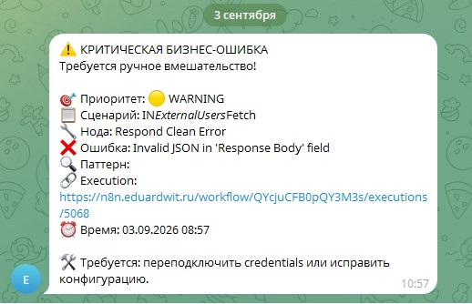
Алерт о критической ошибкеДанные в Supabase
Реальные данные в таблицах di_clean_records, daily_aggregates,
analysis_results, reports,
workflow_errors, validation_failures
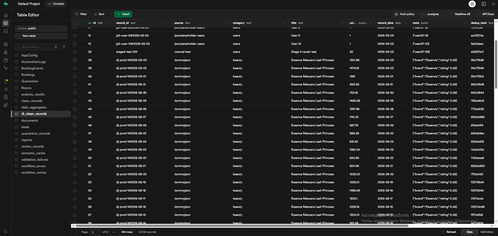
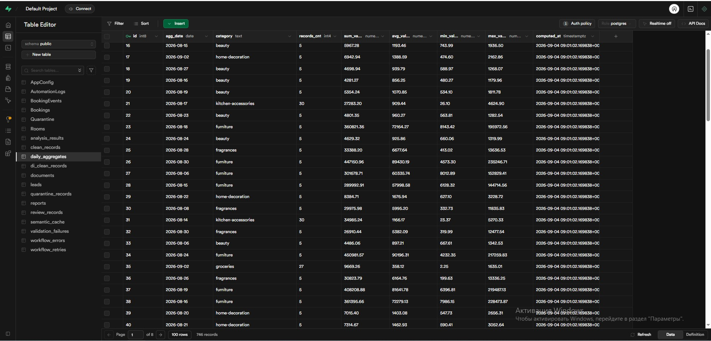
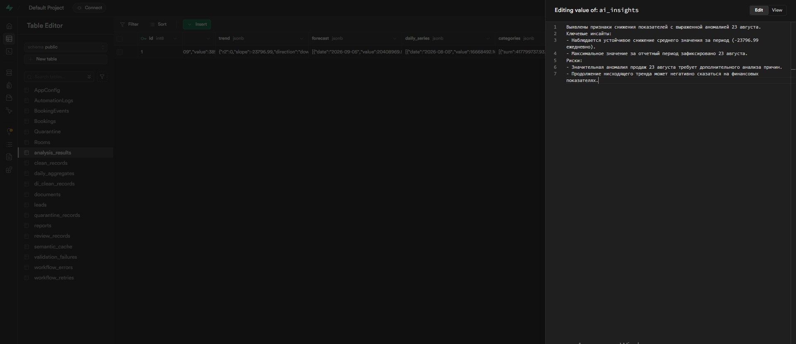
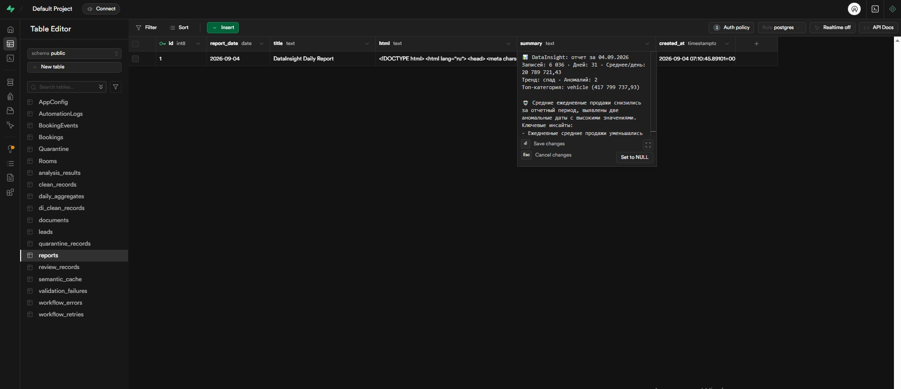
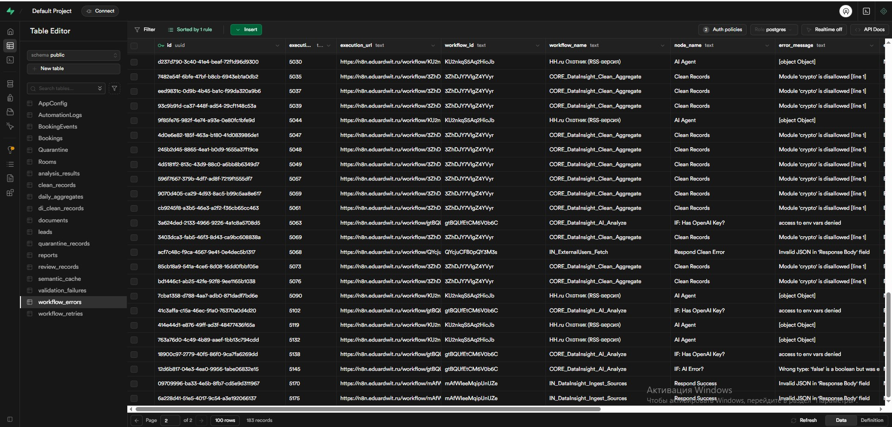
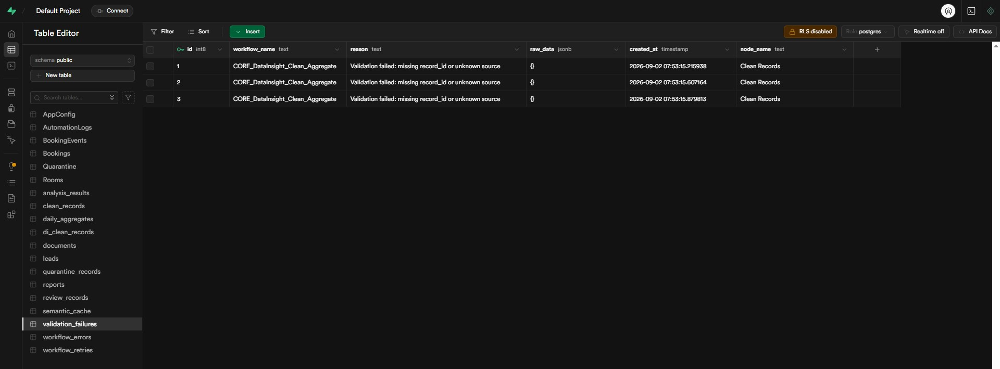
Executions в n8n
Успешные выполнения сценариев с Mode=webhook и Status=Success
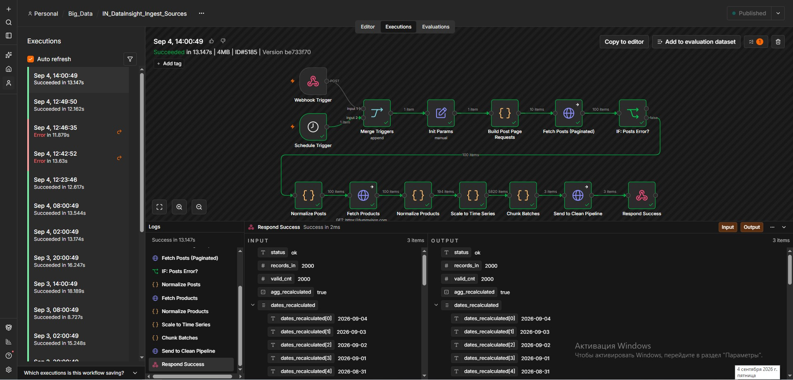
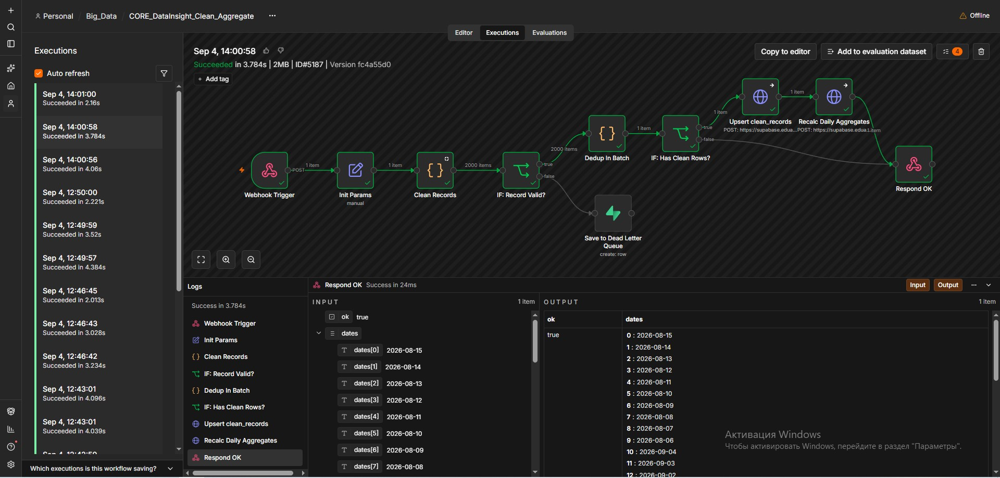
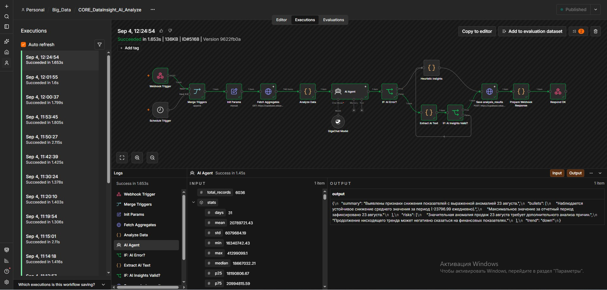
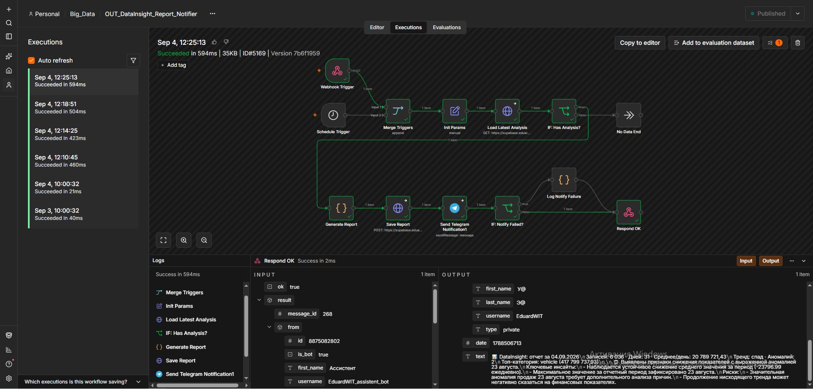
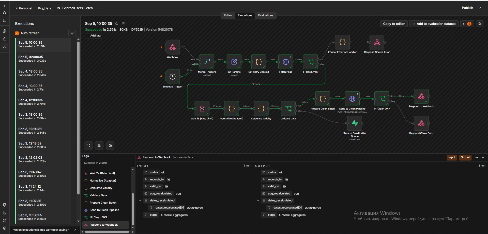